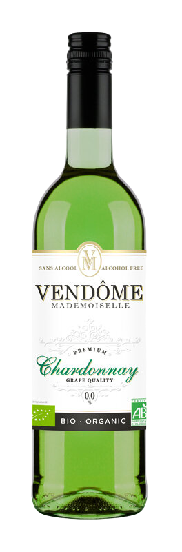

Acheter
Vendôme Mademoiselle Blanc Chardonnay, la boisson sans alcool Vendôme Mademoiselle Chardonnay, à base de vin désalcoolisé dont les ingrédients sont issus de l’agriculture biologique, est conçue à partir d’un raisin brillant et doré.
Dans sa robe jaune paille, cette boisson sans alcool à base vin désalcoolisé est ample et élégante. Elle se caractérise par un bel arôme fruité facilement reconnaissable. Un arôme riche en agrumes, pamplemousse et citron, mais aussi en acacia, caramel, beurre frais et noix de muscade. Son goût est délicieusement acidulé, voire même minéral et provoque une belle fraîcheur en bouche.
A servir entre 6 et 8°C.
Dans sa robe jaune paille, cette boisson sans alcool à base vin désalcoolisé est ample et élégante. Elle se caractérise par un bel arôme fruité facilement reconnaissable. Un arôme riche en agrumes, pamplemousse et citron, mais aussi en acacia, caramel, beurre frais et noix de muscade. Son goût est délicieusement acidulé, voire même minéral et provoque une belle fraîcheur en bouche.
A servir entre 6 et 8°C.
DÉTAILS :
Calories pour 100 ml : 19,7 calories
Degré d’alcool : moins de 0,0 % alc./vol
VENDÔME SANS
BULLES BLANC
BULLES BLANC
Vendôme Mademoiselle Blanc sans alcool à base de vin blanc désalcoolisé est fruitée et agréable, facile d’accès, elle peut être consommée à tout moment et peut accompagner presque tous les plats et particulièrement les poissons, crustacés ainsi que la volaille.